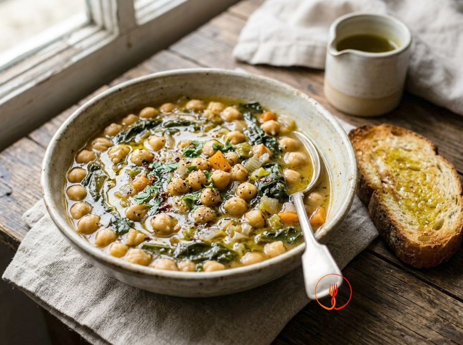

Ceci in zimino
A thick and oily legume soup typical of Ligurian cuisine, which is also prepared on Christmas Eve
Ingredients
- Dried chickpeas400 g
- White onion2 n.
- Carrot1 n.
- Celery stalk1 n.
- Extra virgin olive oil1 glass
- Homemade bread4 slices
- Swiss chard300 g
- Fine saltto taste
- Ground black pepperto taste
Allergens
Gluten, Celery
May contain traces of: Mustard, Sesame, Soy.
Method
- To prepare the recipe for ceci in zimino, soak the chickpeas in plenty of cold water for at least 8 hours.
- Drain the chickpeas and discard the water.
- Place the rinsed chickpeas in a pot, cover them with water, and boil over low heat for 2 hours.
- In the meantime, peel the carrot and onion and mince them. Chop the celery into small pieces.
- In a saucepan, pour the oil and sauté the vegetables over low heat.
- Add the washed and drained Swiss chard and let it wilt.
- Add the chickpeas, season with salt and pepper, and simmer for about 10 minutes.
- Cut the homemade bread into cubes, place it on a baking tray lined with parchment paper, season it with oil, salt, and spices, and bake at 200 degrees for 10 minutes.
- When it is golden brown, turn off the oven and use the bread as croutons for the soup.
Nutrition facts (estimate)
| Per serving (865 g) | Per 100 g | |
|---|---|---|
| Energy | 6673 kJ / 1595 kcal | 770 kJ / 184 kcal |
| Protein | 48 g | 5.5 g |
| Carbohydrates | 164 g | 19 g |
| of which sugars | 25 g | 2.9 g |
| Fat | 81 g | 9.4 g |
| of which saturates | 11 g | 1.3 g |
| Fibre | 42 g | 4.9 g |
| Salt | 1.8 g | 0.2 g |
AI estimates based on average CREA / USDA data: indicative only, not a substitute for medical or dietitian advice.
Open the recipe in the app for the shopping list, ingredient sheets and nearby shops.